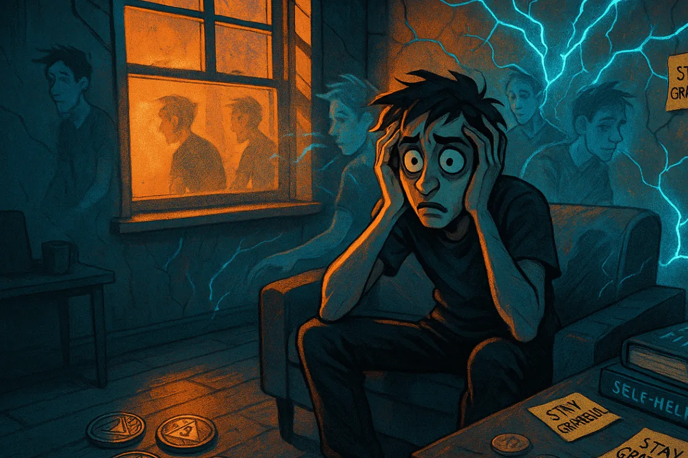

I hit one year sober and genuinely believed I'd feel something close to proud. Maybe even free. Instead, sobriety handed me a level of crippling anxiety I had absolutely no frame of reference for. Every morning I dragged myself through Calgary's downtown core just to get to work — a routine errand for most people, a full-blown ordeal for a nervous system running on fumes and unprocessed terror.
Looking back, I don't know why I assumed that level of panic was normal. The only explanation I have is that I'd been living inside it for so long I had nothing to compare it to. It wasn't until I started healing at the physiological level — building actual contrast between dysregulation and something resembling calm — that I could finally see how dysfunctional my baseline had always been.
The anxiety wasn't background noise. It was pure, unfiltered adrenaline with nowhere to go. The moment I stepped into a crowd, boarded the train, or entered the enclosed walkways of the Plus-15 system — a network of elevated indoor corridors that effectively becomes a city within a city during business hours — my brain fired as if an attack were already underway.
The walk from the train platform to my desk took fifteen minutes. By the time I sat down, it felt like I'd already fought something. Within an hour, the adrenaline crash arrived and wiped me out — before the workday had even properly started. Then I still had eight hours ahead of me. And then the return trip through the same gauntlet. Every single day.
The recovery rooms ran on a small, shared inventory of phrases. I heard them so often they stopped sounding like support and started to feel like ritual. There was a strange comfort to them, though — they worked like status. A kind of verbal currency that served to signal one’s authority within the room. They started to feel like coded double entendres, and somewhere along the way, the meaning dropped out entirely. All that remained was a strange, performative obligation: something you said because you were expected to, whether it helped or not:
So I did exactly what I was told. It was working for them — so why not me? I followed the formulas. I showed up when it was expected. I participated when every part of me wanted to disappear into the nearest exit. I stayed connected wherever I could.
I convinced myself that if I held on long enough, if I could just keep the outside intact before anyone noticed what was happening inside, eventually something would click. That the performance would become real. That I could fake my way into actually being okay.
That is not what happened. Instead, I felt myself coming apart in ways that left no visible evidence:
People told me this was what growth feels like. The thought that crossed my mind was: If this is growth, then I don't want any part of it — because the consequences of self-destruction had to be better than whatever this was. Right?
Because it wasn't growth. It was the unraveling of a man who had lost the only coping mechanism he'd ever known — suddenly exposed, with no buffer, to the exact things he'd spent twenty years drinking to outrun.
I wasn't stuck in withdrawal.
I wasn't failing recovery.
I wasn't lacking discipline or gratitude or willingness.
I was up against something older, deeper, and nameless — something that had been running the show long before the first drink ever entered the picture.
And because I couldn't explain what was actually happening — because the disconnect between what I was doing and what I was feeling made no sense that I could articulate — I did what I had always done: I turned it inward, decided I was broken, and let the weight of that conclusion pull me further under than the chaos ever had.
From the outside, it looked like recovery. On the inside, it felt like a private collapse no one had language for.
Early recovery is chaotic — but at least the chaos makes sense. What no one prepares you for is the delayed implosion: that point, often around the one-year mark, where outward progress collides head-on with terrifying inward decline.
For me, it felt like my brain was coming apart at the seams:
Everyone had the same answer: "That's just PAWS — it can last up to two years."
That explanation felt like being handed a pamphlet when what I needed was a diagnosis. My body had long finished detoxing. This wasn't a recalibration.
This wasn't withdrawal. It was my nervous system screaming for help in a language no one seemed to speak.
The more I tried to fix it with slogans, the deeper it pulled me under.
What I needed wasn't more discipline — it was trauma work.

I spent months convinced I was dealing with one while the other flew completely under the radar. Here's the difference nobody showed me:
PAWS fades. Trauma cycles. Knowing which one you're actually dealing with changes everything about how you approach it.
| Feature | PAWS (Post-Acute Withdrawal Syndrome) | Trauma Response (C-PTSD) |
|---|---|---|
| What it is | The brain and body recalibrating after substance removal — a healing process. | The nervous system's survival wiring misfiring long after the danger has passed — an injury response. |
| Duration | Peaks and fades within months; in severe cases can last up to two years. | Persists indefinitely without trauma-informed healing. It does not fade with time alone. |
| Key Symptoms | Sleep disruption, fatigue, irritability, brain fog, low motivation, cravings. | Emotional flashbacks, numbness, panic, intense self-blame, hypervigilance, relational fear. |
| Best Treatment | Time, rest, nutrition, movement, and routine to support natural repair. | Trauma-informed therapy (ART, EMDR, Somatic Experiencing), nervous system regulation, relational safety. |
| Trajectory | Gradual, mostly linear improvement — good days slowly outnumber bad ones. | Cyclical patterns that resurface under stress or emotional triggers, often without any clear forward progress. |
This is the lived version of what the science in Brain on Fire and Epigenetics describes happening biologically in the nervous system.
If you've been sober a year and feel like you're back at square one — or further back than that — that is not PAWS anymore.
That's your nervous system asking, with everything it has, for a different kind of help.
A critical note on PAWS
There is growing debate around how Post-Acute Withdrawal Syndrome (PAWS) is diagnosed and applied in recovery settings. In many cases, symptoms attributed to prolonged withdrawal may actually reflect underlying trauma, anxiety disorders, or nervous system dysregulation that existed long before substance use began.
In other words — not everything that shows up after sobriety is caused by the substance leaving your body.
For a deeper look at this perspective, see: When Is Post-Acute Withdrawal Syndrome Really?
"The consequences of mistaking PTSD for PAWS can be catastrophic. Instead of empathy, those with alcohol and drug use disorders are viewed as responsible for their symptoms, and at times, overtly blamed. Instead of being treated for PTSD, they're told to 'hang in there' until their symptoms subside. Sometimes their symptoms do subside, but sometimes they don't, leading to relapse, self-medication, and risk of overdose and death."
It is rarely a choice between PAWS or Trauma. Especially in the first year, most of us are on a dual-track recovery: one track is the brain physically healing from chemical impact, and the other is the nervous system finally "feeling" the weight of the past.
The danger isn't in acknowledging PAWS—it’s in attributing everything to it.
When clinicians and recovery rooms use PAWS as a universal umbrella, they inadvertently thin the ice for the addict. If you are told your night terrors or mid-day panic are just "brain recalibration," you’ll try to out-wait an injury that actually requires active repair.
The outcome of this misdiagnosis can be horrific: an exhausted survivor who eventually relapses because they were told to "trust a process" that wasn't actually addressing their specific wound. You can have both. But you must name both too.
Hormones associated with stress and allostatic load protect the body in the short run and promote adaptation, but in the long run allostatic load causes changes in the body that lead to disease.
— Bruce S. McEwen (McEwen, 1999, Ann NY Acad Sci)
Phrases like "One day at a time" or "Keep coming back" can calm a thinking mind. But trauma isn't stored in the thinking mind. It lives in the body — in survival circuits that don't respond to words, don't care about your intentions, and cannot be reasoned with from the outside.
You cannot slogan your way out of nervous system dysregulation. The body doesn't speak that language.
When the nervous system is locked in fight, flight, or freeze, the prefrontal cortex goes dim. The logical brain — the part that can hear a slogan and nod along — gets bypassed entirely. Positive thinking bounces off a body that has already decided it's in danger and isn't taking new submissions.
You cannot reason with a fire alarm jammed in the "on" position. You have to find the wiring.
More faith won't do it. More discipline won't do it. More time in the rooms won't do it — not if what's underneath has never been addressed.
What actually does it is felt safety. Consistent, repeated, embodied experiences that teach the nervous system — through evidence, not argument — that the emergency is over. That it is finally allowed to stand down.
If what you're experiencing doesn't feel like PAWS anymore, the path forward looks different. Here's where to start:
Recovery that stops at abstinence is maintenance. It keeps you from the worst — and that matters, genuinely — but it leaves the wound untouched.
Recovery that integrates trauma work is something else entirely. It's the difference between managing a condition and actually changing the conditions. Between surviving your own nervous system and finally learning to live inside it. That's not a guarantee — it's a direction. But it's the only direction that leads somewhere worth going.
Follow the next step in order, or branch out into related topics.
These sources provide scientific context for the physiological and psychological overlap between post-acute withdrawal and trauma, and support trauma-informed, body-based recovery approaches. They are educational and not medical advice.